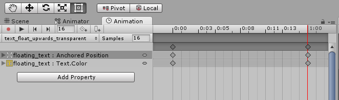
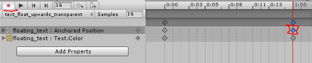
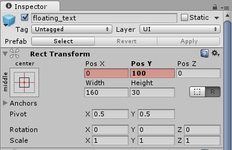
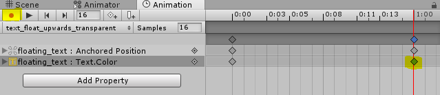
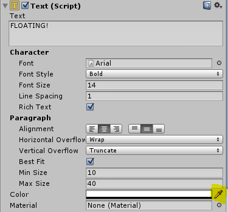
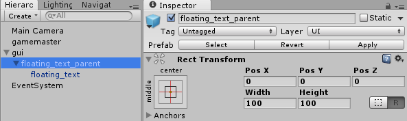
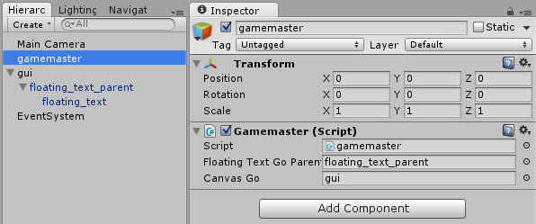
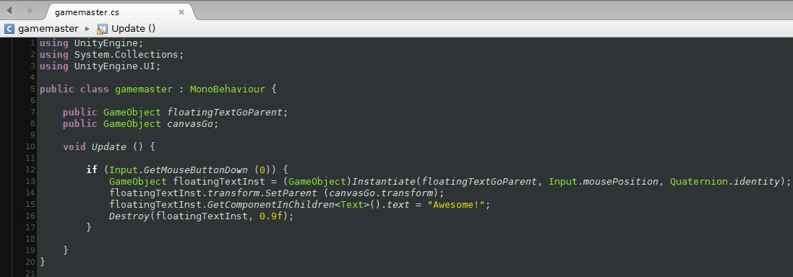

1. Create canvas
Start simple by adding a canvas to your scene (UI -> Canvas). My canvas is named simply as 'gui'. You don't have to do anything else to it for now.
2. Create a new text gameobject
This again is pretty self-explanatory. Just go ahead and create a new text object (UI -> Text). This will be our text, which we are going to animate.
3. Create a parent gameobject for your text gameobject

Just create an empty gameobject and drag your text gameobject under it, to make it a child gameobject of the new empty gameobject (in my case I already named it to 'floating_text_parent').
Later, we will then instantiate this parent/child combo. By doing this we ensure that the text will animate in the right position.
Remember to create a prefab of this 'floating_text_parent'!
4. Create a new animation for your text gameobject
Open Unity's animation tab by navigating to window -> animation. Next select our text gameobject, which we want to animate, and click the 'create' button. After saving the animation, copy these properties (as shown in the image on top) to the dopesheet.
Change the sample count to 16.
After copying the properties go ahead and click on the rightmost rectangle in the timeline and make sure the record button is pressed down.
Then look to your inspector and the rect transform's positional data fields should be highlighted in red. Now go ahead and change the 'Pos Y' value to 100 (for example). This means that on the last frame of the animation, the text gameobject has moved up by 100 pixels.
Make sure that on the first frame the text is positioned to zero (pos y and pos x).
Next select the Text.color property and choose the rightmost rectangle on the timeline. Make sure the record button is pressed down once again.
Then look to your inspector and the floating text's (Text (Script)) color should be highlighted in red. Press the color field and make the color transparent by sliding the 'A' slider to zero.
To test the animation out, make sure the 'floating_text_parent' is centered (position: 0, 0, 0) and it's a child of our canvas (named 'gui'). Then go ahead and press the 'play' button on our animation tab.
5. Using a script to instantiate our text
First create a new gameobject named 'gamemaster' and add a new script to it named 'gamemaster' (or whatever you want). Then copy this simple code:
In text format:
using UnityEngine;
using System.Collections;
using UnityEngine.UI;
public class gamemaster : MonoBehaviour {
public GameObject floatingTextGoParent;
public GameObject canvasGo;
void Update () {
if (Input.GetMouseButtonDown (0)) {
GameObject floatingTextInst = (GameObject)Instantiate(floatingTextGoParent, Input.mousePosition, Quaternion.identity);
floatingTextInst.transform.SetParent (canvasGo.transform);
floatingTextInst.GetComponentInChildren().text = "Awesome!";
Destroy(floatingTextInst, 0.9f);
}
}
}
This piece of code instantiates the text's parent gameobject in the current mouse position when left mouse button is pressed. It also set's the parent to be our canvas gameobject, changes the text's value and destroys the instantiated gameobject in 0.9 seconds.
If the gameobject is not destroyed then it will continue to loop it's animation.